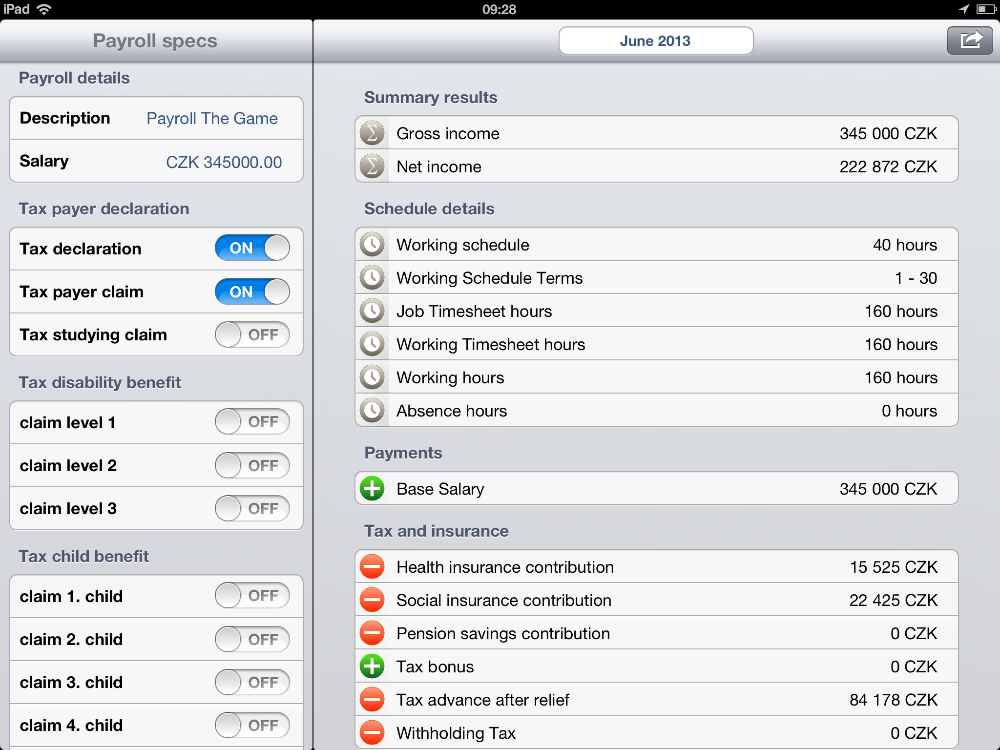

Hravé Mzdy, Mzdy Hravě, OKmzdy pro Windows.
20 let od programování mzdových systémů v COBOLu, přes XBase, Clipper, OKmzdy pro DOS (C/C++), OKmzdy pro Windows (C++) a dnes Ruby, .NET C#, F#:
Zaměření
Bezvadné splnění povinných úkolů evidence v oblasti odměňování zaměstnanců je pro zaměstnavatele kriticky důležité, ale často komplikované, a i pro opravdové profesionály úmorné a časově náročné. Tuto složitou situaci vytváří na jedné straně často se měnící legislativní prostředí. A na druhé straně složitá administrativa spojená s zajištěním všech procesů pracovně právního prostředí ve spojení s vysokou mírou odvodů z odměn zaměstnanců. Tyto podmínky vytvářejí prostředí, ve kterém se neustále zvyšují náklady na technické a personální zabezpečení zpracování této agendy.
Cíle
Hravé Mzdy poskytují nejjednodušší způsob jak dokonale zvládnout platovou a mzdovou agendu a profesionálům i laikům umožňují plnit jejich úkoly spolehlivě, jednoduše a s úsměvem.
Řešení - Okamžitě, jednoduše, přehledně
Poskytujeme platformu, kde jsou všechna personální data organizována tak, aby splnění všech úkolů bylo jednoduše a přirozeně dosažitelné a získané výsledky přehledně ověřitelné. Umožňujeme vám růst, učit se, spolupracovat. Dáváme vám nástroje ke zvyšování vaší odbornosti. Umožňujeme vám sdílet vědomosti profesionálů a učíme vás používat efektivní postupy. Vy nás inspirujete k ještě větší oddanosti našemu cíli a dalšímu zlepšování.
Projekt

- Hravé mzdy - online platová a mzdová agenda
- Hravé mzdy - online platová a mzdová agenda
- Mzdy Hravě - online platová a mzdová agenda
Budoucnost začíná již dnes
Jak lze využít nových možností technologií k prospěchu uživatelů? Kdybych byl pracovníkem s povinností zpracování platové a mzdové agendy??? Jak bych si sám představoval svůj běžný den, tak abych se cítil úspěšný a spokojený?
Představte si, že jste mzdová účetní. Přicházíte ráno do kanceláře. Stop. Ještě jednou.
Představte si, že ráno vstáváte a chystáte se na cestu do kanceláře. Je datum, někdy mezi 20tým únorem a 15tým březnem, období ročního zúčtování daní. V kanceláři, kam se za chvíli vydáte, leží na vašem stole hromádka růžových listin, formulářů daňových prohlášení zaměstnanců. V závislosti na počtu zaměstnanců je to hromádka nebo hromada. Řekněme, že jako průměrná mzdová účetní máte ve své zodpovědnosti 200-300 zaměstnanců.
Tento formulář je povinností každého zaměstnance. To pro vás představuje 200-300 formulářů. Tento formulář má pro vaši představu 18 sekcí s údaji a celkem 226 políček, úplně nejjednodušší návod k vyplnění, který jsem ve své praxi viděl a vypracovala ho pochopitelně mzdová účetní pro své zaměstnance, a který se soustředil jen na základní společné záležitosti, měl délku stránky A5, ovšem hustě popsané menším písmem. Musíte zajistit jejich správné a úplné vyplnění, ověřit oprávněnost nároků zaměstnanců na uplatňované úlevy. Musíte zajistit kompletní a přesné přenesení údajů z formulářů do informačních systémů pro zpracování mezd a platů.
Období mezi 20tým a 15tým dnem v měsíci je ve znamení přípravy dat pro uzavření výplat, které zaměstnanci očekávají na svých účtech, přesně v ten den, kdy je stanoven datum výplaty. Je to období uzavírání změn v platových výměrech, uzavírání docházky, přidejte si nové nástupy a odchody zaměstnanců. Tyto činnosti vždy znamenají vložení údajů, značící opisování čísel, předávaných na neelektronických dokumentech do informačního systému a vytváření jiných dokumentů pro státní instituce. Každá tato jednotlivá událost a činnost pro vás znamená nikoliv jednu povinnost, ale hned několik. Hlášení zdravotní pojišťovně, České správě sociálního pojištění, listy důchodového pojištění, potvrzení o příjmech, zápočtové listy, oběžníky a referátníky.
O každé koruně je potřeba s jistotou vědět odkud a jakým způsobem, podle jakých pravidel byla vypočtena. Jen seznam zákonů a vyhlášek může někomu udělat studené kapky potu na čele. To zda budete úspěšní ve své profesi, závisí na tom, jak dokážete s úsměvem vysvětlit všechny povinnosti svým zaměstnancům, za které máte zodpovědnost, předat jim požadovaná potvrzení a dokumenty o trvání jejich zaměstnání. Jejich chybně vyplněné dokumenty jsou překážkou i vašeho úspěchu. Váš úspěch se měří tím, zda všichni dostanou své výplaty na svůj účet ve správné výši, zda jejich příspěvky do fondů zdravotního, nemocenského, důchodového pojištění a odvody daní jsou vypočteny podle správných a platných pravidel, nikdo se netěší ze zjištění, že po 20letech jsou jeho důchodové fondy naplněny jen z malé části. Pokud máte štěstí, osloví vás Český statistický úřad s požadavkem na zpracování některé statistiky. Přidejte si k tomu ještě vrtochy techniky. Takže vstáváte a chystáte se do kanceláře, na co asi myslíte? Jak se při tom všem cítíte?
A jaké by to mělo být? Vaše práce by měla být radost, neměla by vás strašit už od té doby, kdy ráno otevřete oči, zasloužíte si cítit se při své práci úspěšně, mít dobrou náladu, dokonalý přehled, jednoduše přístupnou pomoc, která vám pomůže vysvětlit povinnosti zaměstnancům i pomocí která lehce připravíte zaměstnancům jejich osobní cestovní mapu, podle které si splní své povinnosti jednoduše sám krok za krokem.
Představte si, že ráno vstáváte a víte, že všechny vaše povinnosti, jsou jasně určeny a přehledně organizovány. Víte, že s docházkou jste hotova u poloviny zaměstnanců, máte ze seznamu nových nástupů hotovo vše, a když se později ještě nějaké nové nástupy objeví, budete je moci na závěr měsíce všechny přehledně zkontrolovat, zda u nich byly splněny všechny ohlašovací povinnosti. Víte, že máte zpracovány daňová prohlášení u 120 zaměstnanců a zúčtování daní u 50 z 250, kteří vás o tento úkon žádají. Víte, že rozdíly v hrubých mzdách a vyměřovacích základech jsou způsobeny stropy na pojištění a zvýšením základů o nadlimitní příspěvky na penzijní a životní pojištění. Dokážete to jednoduše předvést i kontrole ze zdravotní pojišťovny, která přijde na kontrolu za 3 nebo 5 let. Lehce s úsměvem potom vysvětlíte zaměstnancům, jak správně a úplně vyplnit jejich daňové prohlášení, panu finančnímu řediteli osvětlíme strukturu mzdových nákladů na nákladových střediscích. Jednoduché, že. K tomu vám pomůže několik kroků, které se už dlouho s úspěchem používají v systémech úkolovníků.
Přidám jen dva úkoly z naší agendy a to otevřít a uzavřít, myšleno zpracování výplatního období. Naše mapa má tyto kroky: Otevřít – Organizovat – Třídit – Upravit – Vyhodnotit – Uzavřít – Hotovo!
Začínáme:
- Otevřít – otevřeme nové výplatní období, určíme, jaké údaje se z minulého období použijí, jaké absence v dalším období pokračují, jaké jsou stavy salda účtů.
- Organizovat – Vytvoříme si prázdné šuplíčky pro nástupy, odchody, absence, mateřské, úpravy prohlášení, dohody, odměny, změny úvazků, změny v zařazeních zaměstnanců, exekuce, přesčasy a náhradní volna z docházky, cestovní náhrady a další.
- Třídit – Začneme postupně zpracovávat úkoly a řadit zpracované položky do našich šuplíčků, pokud se chceme k položce ještě vrátit, nebo ji delegovat na další uživatele – přidáme upozornění pro kolegu.
- Upravit – Údaje, které jsme převzali z minulého měsíce, upravíme na aktuální hodnoty a vkládáme nové, pro vkládání nových údajů ze společného zdroje můžeme vytvořit speciální šuplíček např. odměny.
- Vyhodnotit – zkontrolujeme úplnost jednotlivých šuplíčků se změnami, vyhodnotíme platnost údajů, které jsou evidovány s intervalem od-do, platí-do nebo platí v roce pro měsíce X,Y,Z. Prověříme všechny poznámky i upozornění poznámky od našich kolegů. Prověříme saldo účty plateb a kontrolní validace např. počet odpracovaných hodin v DPP vzhledem k ročnímu limitu.
- Uzavřeme – vytvoříme dokumenty, odešleme platby a oslavíme úspěšně dokončený měsíc.
Snadné, že.
Jednoduše od časového výkazu práce k bankovnímu příkazu
Zpracování údajů je vám k dispozici odkudkoliv, on-line a okamžitě. Prostředí je pružně nastavitelné. Poskytujeme přirozené prostředí, výsledky jsou přesné a okamžité. Složité úkoly řešíme přehledně a jednoduše, opakované automaticky. Kontroly změn probíhají nepřetržitě. Vaše data jsou dokonale zabezpečená. Podklady pro kontroly úřadů budou perfektní a okamžitě k dispozici. Všechny termíny snadno splníte s úsměvem. Naším nástrojem ke zvládnutí často se měnící legislativy jsou včasné aktualizace. Při přípravě podkladů se můžete vyhnout úmorné ruční práci importem dat ze souborů ve standardním formátu. Změny dat můžete vkládat v okamžiku, kdy jsou vám informace známé. Pokud se stane, že doklady obdržíte opožděně, umožňujeme vám provádět nutné korekce přirozeně a zcela podle platné legislativy.